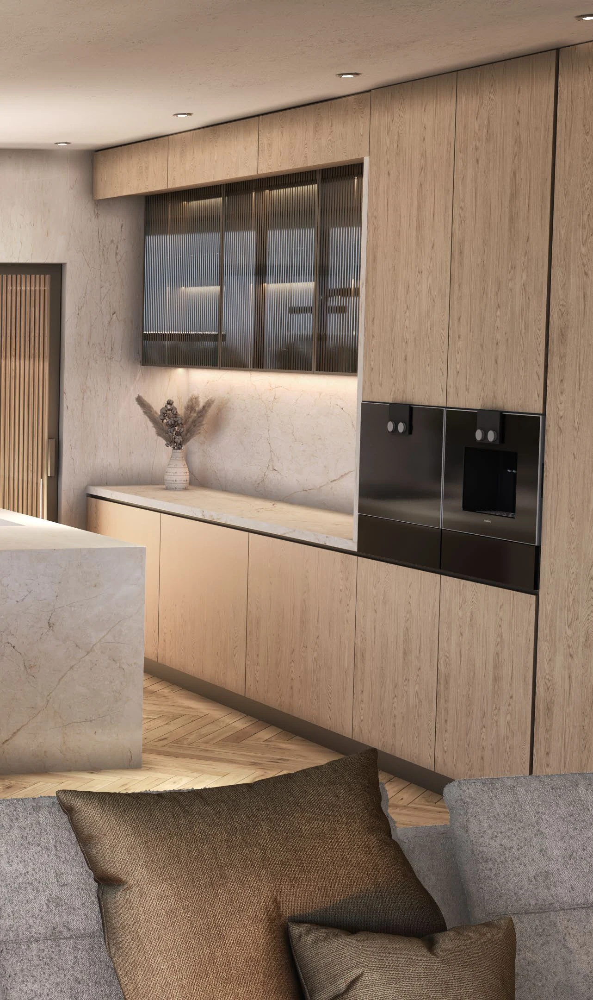
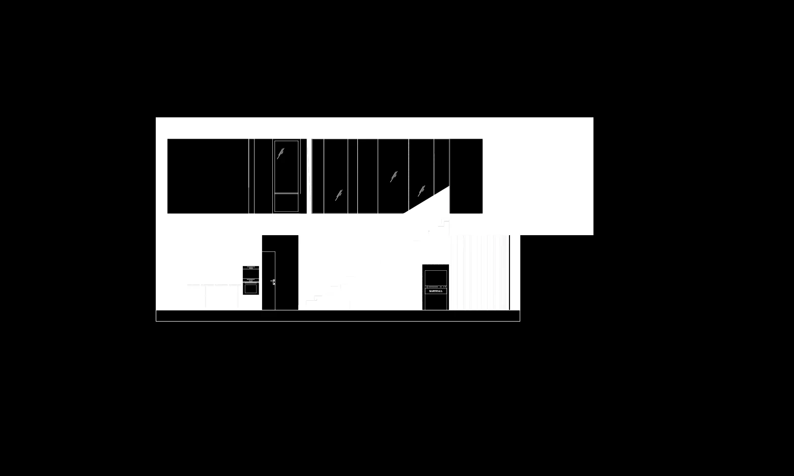

Concept & Visualization Study
An exploratory design study investigating architectural form, material contrast and atmosphere. Visualization is used as part of the design process itself, testing proportions, light and spatial relationships before further development.

Plan / Drawing
Spatial organization

Next project
View